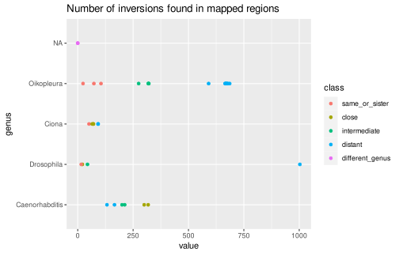

knitr::opts_chunk$set(cache = TRUE, cache.lazy = FALSE)Introduction
After coalescing colinear alignments, removing translocations of repeat-containing sequences and re-coalescing, colinearity is still broken hundreds of time.
Here we explore the role of inversions in scrambling Oikopleura genomes.
Load R pacakges and data
library('OikScrambling') |> suppressPackageStartupMessages()
load("BreakPoints.Rdata")See vignette("LoadGenomicBreaks", package = "OikScrambling") for how the different GBreaks objects are prepared.
Trivial inversions
Documentation
Details can be found in vignette("GenomicBreaks", package = "GenomicBreaks"), in vignette("StructuralVariants", package = "GenomicBreaks"), and ?GenomicBreaks::flagInversions
Number of trivial inversions
More inversions are found after coalescing colinear blocks because of situations where + - + was + - - + before collapsing.
The number of detected inversions is further increased after double-coalescing, but not much.
(invs_summary <- data.frame(
align = sapply(gbs, function(gb) sum(flagInversions(gb)$inv)),
mapped = sapply(coa, function(gb) sum(flagInversions(gb)$inv)),
map2 = sapply(coa2, function(gb) sum(flagInversions(gb)$inv))
))## align mapped map2
## Oki_Osa 614 670 704
## Oki_Bar 604 675 705
## Oki_Kum 89 105 122
## Oki_Aom 608 665 695
## Oki_Nor 541 591 611
## Osa_Oki 613 671 706
## Osa_Bar 241 321 330
## Osa_Kum 620 678 708
## Osa_Aom 56 73 79
## Osa_Nor 212 275 279
## Bar_Oki 597 667 695
## Bar_Osa 237 319 327
## Bar_Kum 608 686 711
## Bar_Aom 237 319 335
## Bar_Nor 19 24 27
## Ply_Ros 42 51 55
## Ply_Rob 58 71 76
## Ply_Sav 16 92 92
## Ply_Oki 0 0 0
## Rob_Ros 50 65 71
## Rob_Ply 58 70 77
## Rob_Sav 14 92 92
## Rob_Oki 0 0 0
## Dme_Dbu 697 1003 1003
## Dme_Dsu 20 44 45
## Dme_Dya 13 21 23
## Dme_Dma 12 16 16
sapply(invs_summary, \(x) tapply(x, row.names(invs_summary) |> OikScrambling:::compDistance(), mean))## align mapped map2
## Dme_Dbu 697.00000 1003.00000 1003.00000
## Dme_Dma 12.00000 16.00000 16.00000
## Dme_Dsu 20.00000 44.00000 45.00000
## Dme_Dya 13.00000 21.00000 23.00000
## In same pop 54.66667 67.33333 76.00000
## Int – Int 42.00000 51.00000 55.00000
## Int – Rob 55.33333 68.66667 74.66667
## Int/Rob – Oki 0.00000 0.00000 0.00000
## Int/Rob – Sav 15.00000 92.00000 92.00000
## North – North 231.75000 308.50000 317.75000
## Oki – North 600.62500 662.87500 691.87500
sapply(invs_summary, \(x) tapply(x, row.names(invs_summary) |> OikScrambling:::compDistance(), median))## align mapped map2
## Dme_Dbu 697 1003.0 1003.0
## Dme_Dma 12 16.0 16.0
## Dme_Dsu 20 44.0 45.0
## Dme_Dya 13 21.0 23.0
## In same pop 56 73.0 79.0
## Int – Int 42 51.0 55.0
## Int – Rob 58 70.0 76.0
## Int/Rob – Oki 0 0.0 0.0
## Int/Rob – Sav 15 92.0 92.0
## North – North 237 319.0 328.5
## Oki – North 608 670.5 704.5
sapply(invs_summary, \(x) tapply(x, row.names(invs_summary) |> OikScrambling:::compDistance(), sd))## align mapped map2
## Dme_Dbu NA NA NA
## Dme_Dma NA NA NA
## Dme_Dsu NA NA NA
## Dme_Dya NA NA NA
## In same pop 35.019042 40.79624 47.57100
## Int – Int NA NA NA
## Int – Rob 4.618802 3.21455 3.21455
## Int/Rob – Oki 0.000000 0.00000 0.00000
## Int/Rob – Sav 1.414214 0.00000 0.00000
## North – North 13.301002 22.35322 26.04323
## Oki – North 25.059572 29.79663 33.17675
invs_summary$pairname <- OikScrambling:::compDistance(rownames(invs_summary))
invs_summary$pairname_s <- OikScrambling:::compDistance(rownames(invs_summary), short = TRUE)
invs_summary$genus <- OikScrambling:::compGenus(rownames(invs_summary))
invs_summary$class <- OikScrambling:::compDistClass(rownames(invs_summary))
invs_summary$target <- sub("_.*", "", rownames(invs_summary))
invs_summary <- invs_summary[invs_summary$class != "Int/Rob – Oki",]
ggplot(invs_summary |> tidyr::pivot_longer(c("align", "mapped", "map2"))) +
aes(value, pairname_s) + geom_point(aes(col = target)) +
ggtitle ("Number of inversions found after different post-processings") +
facet_wrap(~name, ncol= 1)
ggplot(invs_summary |> tidyr::pivot_longer(c("mapped"))) +
aes(value, genus) + geom_point(aes(col = class)) +
ggtitle ("Number of inversions found in mapped regions") 
Motif search
Enrichment for motifs is being searched in vignette("PWM", package = "OikScrambling").
Breakpoint regions flanking inversions in the same-population alignments.
Large inversions
The comparison of contig_90_1 to Okinawa’s chromosome 1 shows a large inversion. Note that contig_90_1 appears to be assembled in reverse orientation compared with the short to long arm orientation that we chose in our chromosomal assemblies.
coa2$Oki_Kum |> swap() |> reverse () |> swap () |> plotApairOfChrs(chrQ = "contig_90_1")
coa2$Oki_Kum |> plyranges::filter(seqnames == "chr1", seqnames(query) == "contig_90_1", width > 1e3) |> coalesce_contigs()## GBreaks object with 15 ranges and 2 metadata columns:
## seqnames ranges strand | query score
## <Rle> <IRanges> <Rle> | <GRanges> <integer>
## [1] chr1 5197932-5218400 + | contig_90_1:2733373-2753783 20469
## [2] chr1 5225466-5354754 - | contig_90_1:2610517-2732825 129289
## [3] chr1 5355072-5521877 + | contig_90_1:1710995-1839819 166806
## [4] chr1 5522689-5557995 - | contig_90_1:1840801-1875801 35307
## [5] chr1 5557996-5663066 + | contig_90_1:1875862-1969463 105071
## ... ... ... ... . ... ...
## [11] chr1 6163602-6171132 - | contig_90_1:2412844-2420381 7531
## [12] chr1 6175547-6297768 + | contig_90_1:2420606-2511021 122222
## [13] chr1 6297954-6308357 - | contig_90_1:2517620-2523307 10404
## [14] chr1 6311181-6375852 + | contig_90_1:2532049-2610516 64672
## [15] chr1 6378758-8086428 - | contig_90_1:27-1710992 1707671
## -------
## seqinfo: 19 sequences from OKI2018.I69 genome
coa2$Oki_Kum |> plyranges::filter(seqnames == "chr1", seqnames(query) == "contig_90_1", width > 1e3) |> range()## GBreaks object with 1 range and 1 metadata column:
## seqnames ranges strand | query
## <Rle> <IRanges> <Rle> | <GRanges>
## [1] chr1 5197932-8086428 * | contig_90_1:27-2753783
## -------
## seqinfo: 19 sequences from OKI2018.I69 genomeSmall inversions.
Check vignette("ColinearityInterruptors", package = "OikScrambling").
Breakpoint regions flanking large inversions in the North–North alignments.
Let’s try to isolate some inversions that are easy to spot on a whole-chromosome alignment.
plotApairOfChrs(coa2$Osa_Bar, "PAR")
(ROI1 <- coa2$Osa_Bar |> plyranges::filter(seqnames == "PAR", start > 9e6, end < 14e6, start(query) > 7e6, end(query) < 12e6))## GBreaks object with 35 ranges and 6 metadata columns:
## seqnames ranges strand | query Arm
## <Rle> <IRanges> <Rle> | <GRanges> <factor>
## [1] PAR 9112106-9113024 + | PAR:7914713-7915633 long
## [2] PAR 9122674-9169015 + | PAR:7647348-7694603 long
## [3] PAR 9169027-9383526 + | PAR:7700204-7911308 long
## [4] PAR 9393845-9625372 - | PAR:8648572-8868624 long
## [5] PAR 9625425-9626193 + | PAR:8647713-8648486 long
## ... ... ... ... . ... ...
## [31] PAR 12882838-12884857 + | PAR:11615009-11617029 long
## [32] PAR 12884875-13019548 - | PAR:10442170-10570866 long
## [33] PAR 13027569-13077236 - | PAR:10392248-10442013 long
## [34] PAR 13077254-13079729 + | PAR:11592137-11594612 long
## [35] PAR 13079758-13079924 + | PAR:10378144-10378306 long
## rep repOvlp transcripts
## <CharacterList> <integer> <Rle>
## [1] <NA> 0 <NA>
## [2] rnd,tandem 1671 g9531.t1;g9532.t1;g9..
## [3] rnd,unknown,tandem,... 4642 g9552.t1;g9553.t1;g9..
## [4] rnd,tandem,LowComplexity,... 5474 g9629.t1;g9630.t1;g9..
## [5] <NA> 0 <NA>
## ... ... ... ...
## [31] rnd 1167 g10776.t1
## [32] tandem,rnd,LowComplexity,... 3102 g10777.t1;g10779.t1;..
## [33] unknown,rnd,tandem 1637 g10840.t1;g10841.t1;..
## [34] rnd 0 <NA>
## [35] <NA> 0 <NA>
## flag
## <character>
## [1] <NA>
## [2] <NA>
## [3] <NA>
## [4] Inv
## [5] <NA>
## ... ...
## [31] <NA>
## [32] <NA>
## [33] <NA>
## [34] <NA>
## [35] <NA>
## -------
## seqinfo: 483 sequences from OSKA2016v1.9 genome
plotApairOfChrs(ROI1)
# The contours of the main 4 blocks can be coalesced by applying a size threshold.
ROI1 |> coalesce_contigs(min = 1e4)## GBreaks object with 4 ranges and 2 metadata columns:
## seqnames ranges strand | query score
## <Rle> <IRanges> <Rle> | <GRanges> <integer>
## [1] PAR 9122674-9383526 + | PAR:7647348-7911308 260853
## [2] PAR 9393845-10352419 - | PAR:7917928-8868624 958575
## [3] PAR 10363392-11843885 + | PAR:8872985-10375361 1480494
## [4] PAR 11852584-13077236 - | PAR:10392248-11592118 1224653
## -------
## seqinfo: 483 sequences from OSKA2016v1.9 genome
# The gaps flanking the first inverted region are quite large!
(ROI1_gaps <- ROI1 |> coalesce_contigs(min = 1e4) |> cleanGaps() |> plyranges::mutate(w = width))## GRanges object with 3 ranges and 1 metadata column:
## seqnames ranges strand | w
## <Rle> <IRanges> <Rle> | <integer>
## [1] PAR 9383527-9393844 * | 10318
## [2] PAR 10352420-10363391 * | 10972
## [3] PAR 11843886-11852583 * | 8698
## -------
## seqinfo: 483 sequences from OSKA2016v1.9 genome
# The left-side gap contains no alignment at all even before discarding the short ones.
subsetByOverlaps(gbs$Osa_Bar, ROI1_gaps)## GBreaks object with 4 ranges and 8 metadata columns:
## seqnames ranges strand | score query
## <Rle> <IRanges> <Rle> | <numeric> <GRanges>
## [1] PAR 10355613-10355774 - | 500 XSR:671520-671674
## [2] PAR 10355951-10356573 - | 1610 XSR:670597-671182
## [3] PAR 10356752-10361833 - | 13551 XSR:665505-670596
## [4] PAR 11847299-11849269 + | 5701 PAR:10385920-10388171
## Arm rep repOvlp transcripts flag nonCoa
## <factor> <CharacterList> <integer> <Rle> <character> <logical>
## [1] long <NA> 0 <NA> Col FALSE
## [2] long <NA> 0 <NA> Col FALSE
## [3] long <NA> 0 <NA> <NA> FALSE
## [4] long <NA> 0 g10434.t1 <NA> TRUE
## -------
## seqinfo: 483 sequences from OSKA2016v1.9 genome
# The same region aligns well to Aomori, suggesting that it is not missassembled
coa2$Osa_Aom |> plyranges::filter(seqnames == "PAR", start > 9e6, end < 14e6) |> plotApairOfChrs()
# The Osa–Bar unaligned regions appear to align well to Aom, but the first one is split
# and the second one contains a small inversion. Are there a hotspots ?
subsetByOverlaps(gbs$Osa_Aom, ROI1_gaps, type = "any") |> plotApairOfChrs()
subsetByOverlaps(gbs$Osa_Aom, ROI1_gaps[1], type = "within") |> plotApairOfChrs()
subsetByOverlaps(gbs$Osa_Aom, ROI1_gaps[2], type = "within") |> plotApairOfChrs()
subsetByOverlaps(gbs$Osa_Aom, ROI1_gaps[3], type = "within") |> plotApairOfChrs()
# In the alignment to Okinawa, it is scrambled.
coa2$Osa_Oki |> plyranges::filter(seqnames == "PAR", start > 9e6, end < 14e6) |> plotApairOfChrs()
Export inversions to ZENBU
Okinawa
invs <- sapply(coa[1:5], inv2UCSCData) |> SimpleList()
rtracklayer::export(invs$Oki_Osa, "inversions_v4.0.0_Oki_Osa.bed")
rtracklayer::export(invs$Oki_Bar, "inversions_v4.0.0_Oki_Bar.bed")
rtracklayer::export(invs$Oki_Kum, "inversions_v4.0.0_Oki_Kum.bed")
rtracklayer::export(invs$Oki_Aom, "inversions_v4.0.0_Oki_Aom.bed")
rtracklayer::export(invs$Oki_Nor, "inversions_v4.0.0_Oki_Nor.bed")Ōsaka
invsOska <- sapply(coa[6:10], inv2UCSCData) |> SimpleList()
rtracklayer::export(invsOska$Osa_Oki, "inversions_v4.0.0_Osa_Oki.bed")
rtracklayer::export(invsOska$Osa_Bar, "inversions_v4.0.0_Osa_Bar.bed")
rtracklayer::export(invsOska$Osa_Kum, "inversions_v4.0.0_Osa_Kum.bed")
rtracklayer::export(invsOska$Osa_Aom, "inversions_v4.0.0_Osa_Aom.bed")
rtracklayer::export(invsOska$Osa_Nor, "inversions_v4.0.0_Osa_Nor.bed")Breakpoint regions flanking inversions
Inversions break synteny. Therefore, the unaligned regions flanking them are classified as breakpoint regions. This means that they are not paired with the other genome. Here, we will do the pairing by 1) flipping the inversions and re-coalescing the alignments, and 2) isolating the new bridge regions produced in that process.
flipInversions <- function(gb) {
Invs <- which(flagInversions(gb)$inv) + 1
strand(gb)[Invs] <- ifelse(strand(gb)[Invs] == "+", "-", "+")
gb
}
flippedInvs <- sapply(coa, flipInversions) |> SimpleList()
# See https://github.com/oist/GenomicBreaks/issues/20
bridgeRegions_ <- function(gb) {
if(sum(flagColinearAlignments(gb)$colinear) == 0) return(GBreaks())
bridgeRegions(gb)
}
flippedInvs_bri <- sapply(flippedInvs, bridgeRegions_) |> SimpleList()
# Copied from the LoadGenomicBreaks vignette
flagLongShort_ <- function(gr, longShort) {
genomeT <- gr |> genome() |> unique()
if(genomeT %in% names(longShort))
gr <- flagLongShort(gr, longShort[[genomeT]])
if("GBreaks" %in% class(gr)) {
genomeQ <- gr$query |> genome() |> unique()
if(genomeQ %in% names(longShort)) {
# sort, flag, unsort, extract flag
grq <- gr$query
grq$idx <- seq_along(grq)
grq <- sort(grq, ignore.strand = TRUE)
grq <- flagLongShort(grq, longShort[[genomeQ]])
gr$query$Arm <- grq$Arm[order(grq$idx)]
}
}
gr
}
flippedInvs_bri[1:15] <- BiocParallel::bplapply(flippedInvs_bri[1:15], flagLongShort_, longShort)
# Copied from the RegionWidths vignette
GBreaks2widthTibble <- function(gb, pair = NULL) {
df <- as.data.frame(gb)
if(is.null(df$Arm)) df$Arm <- NA
if(is.null(df$rep)) df$rep <- NA
if(is.null(df$query.rep)) df$query.rep <- NA
tibble::tibble(target = df$width, query = df$query.width,
target.rep = ! is.na(df$rep), query.rep = ! is.na(df$query.rep), # TRUE if overlaps a repeat
pair = pair, Arm = df$Arm,
dist = OikScrambling:::compDistance(pair))
}
ggPlotW2W <- function(tibble, plus1 = FALSE, alpha = 0.05) {
if (plus1) {
tibble$target <- tibble$target + 1
tibble$query <- tibble$query + 1
}
ggplot(tibble) +
aes(target, query) +
geom_point(alpha = alpha) +
geom_density_2d() +
scale_x_log10() +
scale_y_log10()
}
# Remove empty objects.
flippedInvs_bri[sapply(flippedInvs_bri, length) == 0] <- NULL
w2w <- do.call(rbind, lapply(names(flippedInvs_bri), \(name) GBreaks2widthTibble(flippedInvs_bri[[name]], pair = name)))
ggPlotW2W(w2w |> dplyr::filter(!is.na(Arm))) + facet_wrap(~Arm) +
ggtitle("Width of the target and query regions flanking inversions")## Warning: Transformation introduced infinite values in continuous x-axis## Warning: Transformation introduced infinite values in continuous y-axis## Warning: Transformation introduced infinite values in continuous x-axis## Warning: Transformation introduced infinite values in continuous y-axis## Warning: Removed 115 rows containing non-finite values (stat_density2d).
ggPlotW2W(w2w) + facet_wrap(~dist) +
ggtitle("Width of the target and query regions flanking inversions")## Warning: Transformation introduced infinite values in continuous x-axis## Warning: Transformation introduced infinite values in continuous y-axis## Warning: Transformation introduced infinite values in continuous x-axis## Warning: Transformation introduced infinite values in continuous y-axis## Warning: Removed 183 rows containing non-finite values (stat_density2d).Same-culture inversions
# i28.gbs <- load_genomic_breaks("~/FromSango/I28-4.07.postmasked.gff.gz", type = "match",
# target = genomes$OKI2018.I69, query = BSgenome.Oidioi.OIST.I28) |> flagLongShort(longShort$OKI2018.I69)
# i28.coa <- coalesce_contigs(i28.gbs) |> flagLongShort(longShort$OKI2018.I69)
# i28.briInv <- i28.coa |> flipInversions() |> bridgeRegions()
# i28.briInv$wT <- width(i28.briInv)
# i28.briInv$wQ <- width(i28.briInv$query)
# i28.briInv <- dist2next(i28.briInv)
# i28.w2w <- GBreaks2widthTibble(i28.briInv, pair = "Oki_Oki")
# ggPlotW2W(i28.w2w)
# ggPlotW2W(i28.w2w, plus1 = TRUE, alpha = .5)It looks like some aligned inversions with zero-width bridges on both sides are flanked by tandem inverted unmapped regions.
https://fantom.gsc.riken.jp/zenbu/gLyphs/#config=f863qz3iKBFqUgA75J9BBC;loc=OKI2018_I69_1.0::chr1:7668403..7668663+
A region in Oki that inverted but not in the other genomes, and maybe in only one haplotype. The unaligned regions are shorter in Oki, suggesting that the lesion happened there. They still contain repeats.
https://fantom.gsc.riken.jp/zenbu/gLyphs/#config=Px8xzKj9BdRgDGPSmcNT_;loc=OKI2018_I69_1.0::PAR:16104430..16107799+
coa$Oki_Kum |> plyranges::filter(start >= 16098309, end <= 16113733, seqnames == 'PAR') |> dist2next(ignore.strand = T)A region in Oki inverted compared to I28 and Kum, and maybe also Osaka, flanked by a pair of repeats of the same family that is inserted only in Oki (because gap length is near-zero in I28 and Kum).
Add <- function(gb, n) {
start(gb) <- start(gb ) - n
end (gb) <- end (gb ) + n
start(gb$query) <- start(gb$query) - n
end (gb$query) <- end (gb$query) + n
gb
}
# (ROI3_I28 <- i28.gbs |> plyranges::filter(start >= 10262805, end <= 10277383, seqnames == 'PAR') |> dist2next(ignore.strand = T))
(ROI3_Kum <- coa$Oki_Kum |> plyranges::filter(start >= 10255040, end <= 10280531, seqnames == 'PAR') |> dist2next(ignore.strand = T))## GBreaks object with 3 ranges and 10 metadata columns:
## seqnames ranges strand | query score
## <Rle> <IRanges> <Rle> | <GRanges> <integer>
## [1] PAR 10255449-10267754 + | contig_28_1:275929-288260 12306
## [2] PAR 10268555-10269727 - | contig_28_1:288261-289408 1173
## [3] PAR 10270601-10280100 + | contig_28_1:289410-297588 9500
## Arm rep repOvlp transcripts flag
## <factor> <CharacterList> <integer> <Rle> <character>
## [1] long rnd,unknown 108 g11347.t1 Inv
## [2] long <NA> 0 g11350.t1;g11350.t3 <NA>
## [3] long rnd,tandem,ltr-1 1180 g11351.t1 <NA>
## nonCoa tdist qdist
## <logical> <numeric> <numeric>
## [1] FALSE 801 1
## [2] TRUE 874 2
## [3] FALSE Inf Inf
## -------
## seqinfo: 19 sequences from OKI2018.I69 genome
#
# # Sequence near the
# # Need to shrink to avoid zero-length regions not yet supported by cleanGaps.
# # Add 10 to the gaps to see sequence
((ROI3_Kum$query -1)|> cleanGaps() +10) |> getSeq()## DNAStringSet object of length 2:
## width seq
## [1] 22 TTAGTAGATACGTAATCAGCTC
## [2] 23 TTGACCTACTTAATCTTTAAGCT
# ((ROI3_I28$query -1)|> cleanGaps() +10) |> getSeq()
#
# ROI3_I28
# pairwiseAlignment(ROI3_I28[1] |> Add(6) )
# pairwiseAlignment(ROI3_I28[2] |> Add(8) )
# getSeq(ROI3_I28[2] |> Add(8) |> plyranges::mutate(strand = "+"))
# pairwiseAlignment(ROI3_I28[3] |> Add(6) )
pairwiseAlignment(ROI3_Kum[1] |> Add(6) )##
## Attaching package: 'BSgenome.Oidioi.OIST.OKI2018.I69'## The following object is masked from 'package:BSgenome.Oidioi.OIST.KUM.M3.7f':
##
## Oidioi## Global PairwiseAlignmentsSingleSubject (1 of 1)
## pattern: ACCCCCTTAAAGACAGGCTTATCATGCCTAAGCT...ATCTTTATTAGTCTTTCTTAGTAGATACAGTCGA
## subject: ACACGTTTAAAGACAGGCTTATCATGCCTAAACT...ATCTTTATTAGTCTTTCTTAGTAGATACGTAATC
## score: 19147.97
pairwiseAlignment(ROI3_Kum[2] |> Add(8) )## Global PairwiseAlignmentsSingleSubject (1 of 1)
## pattern: GACTGTACGTAATCAGCTCTACCGAGGCTAGGTT...AACAGTGTCATTTATTTGACCTACTTGTTTAAAA
## subject: GTAGATACGTAATCAGCTCTACCGAGGCTAGGTT...AACAGTGTCATTTATTTGACCTACTTAATCTTTA
## score: 1722.804## DNAStringSet object of length 1:
## width seq
## [1] 1189 TTTTAAACAAGTAGGTCAAATAAATGACACTGTT...ACCTAGCCTCGGTAGAGCTGATTACGTACAGTC
#pairwiseAlignment(ROI3_I28[3] |> Add(6) )My hypothesis:
- Ancestral version with no repeats.
- One
i69_juicer_1_5_16917repeat inserts next tog11343.t3gene - A second copy of
i69_juicer_1_5_16917inserts on the other side of the gene, in the opposite orientation. - Later, because of the tandem inverted repeat, the gene was inverted.
The repeats have inverted tandem sites cagtcgactctggcaattacgag